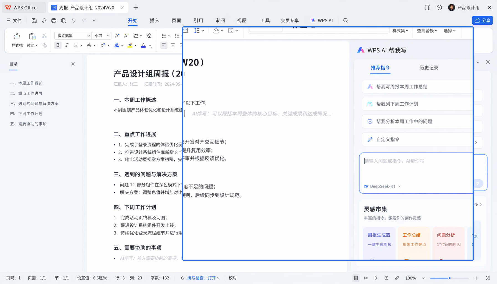
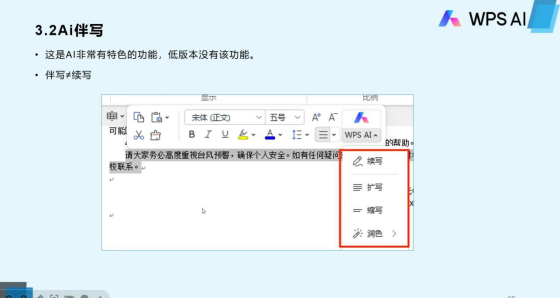

WPS AI 这两年：从伴写到全栈的进化轨迹
从一个"帮你写开头"的小功能，到覆盖文字、表格、演示、PDF 四大组件的全栈 AI 能力，WPS AI 走了一条不那么寻常的路。
现在打开 WPS 的任何一个组件（它的官网上功能清单列得很清楚），你都能在顶部找到那个醒目的 AI 按钮。不管是文字文档里的伴写、表格里的数据分析、演示里的一键生成 PPT，还是 PDF 里的对话式问答——AI 已经嵌进了每一个操作的缝隙里。但如果把时间拉回两年前，你看到的完全是另一番景象。
起点：一句话帮你写开头
WPS AI 最早亮相的时候，定位其实很克制。那时候它叫 "AI 伴写"，核心卖点就一个：你给它一句话，它帮你生成一段文字。写邮件开头、写方案摘要、写会议纪要的第一段——解决的是"盯着空白页不知道写什么"这个最朴素的痛点。
那时候的 AI 还只是 WPS 文字组件里的一个侧边栏功能，和其他组件没什么交集。你在表格里找不到它，更别说 PDF 了。整个 AI 能力就聚焦在"生成一段通顺的中文"这件事上，迭代方向也很单纯：让生成的文字更贴合中文办公的语境，不要输出那种机器味很重的套话。

这个阶段的好处是"够用"——多数人用 WPS 写东西的门槛确实就是那个开头。但局限也很快暴露出来：写完开头之后呢？AI 就退场了，后面全靠你自己。
转折点：从"帮写"到"帮改"
大概半年之后，"AI 伴写"变成了 "AI 帮我写 / 帮我改"。这个措辞变化其实藏着 WPS AI 的第一个关键转折点：团队开始意识到，办公场景里"改"比"写"更高频。
写完一份 3000 字的方案，你需要 AI 帮你润色语气；复制了一段外语文档，你需要 AI 帮你翻译；合同条款里有个长句看不懂，你需要 AI 用通俗语言解释一下——这些需求都不是"写"，而是"理解"和"加工"。
后来翻了wpsai文档才确认，划词翻译、划词解释、全文翻译、AI 朗读这些能力，都是在这个阶段批量加进来的。有意思的是，这些功能从一开始就是跨组件共享的——文字和 PDF 同时拿到了翻译和朗读，而不是文字先上、PDF 跟进。这背后是 WPS AI 架构上的一个决策：核心 AI 引擎统一，各组件只是不同的"格式适配器"。

这个决策后来被反复验证是对的。当数据分析功能加进来的时候，表格组件几乎没有重新开发 AI 能力——它只是把数据区的内容提取出来，交给同一个 AI 引擎去分析。一键生成 PPT 也是同样的思路：AI 负责理解你的文字内容和想要的结构，演示组件负责把结果渲染成幻灯片。
扩张期：四大组件全覆盖
真正让 WPS AI 从"一个功能"变成"一套系统"的，是后续对表格、演示、PDF 三大组件的逐个击破。
表格的 AI 数据分析是我印象最深的一次迭代。之前的表格 AI 能力很薄弱——最多帮你写个公式。数据分析上线后，选中任何一个数据区域，AI 会自动告诉你：华东区三个月连续增长、华南区本月异常下滑、Top 5 滞销品占总库存的 68%。这件事的厉害之处不在于 AI 算出了什么统计量，而在于它直接跳过了"数据分析师才能看懂数据"的门槛。不需要数据透视表，不需要写公式，选中就出结论。
PDF 的 Chat PDF 是另一个里程碑。PDF 一直是办公场景里最顽固的格式——你没法像编辑 Word 那样编辑它，更没法"提问"。Chat PDF 把这个壁垒打碎了：上传一份 50 页的合同，问"付款条款的违约责任是什么"，AI 直接定位到那几行原文并摘出来。后来追加的关键点提取更精准——专门帮你从合同里抠金额、从论文里抠实验数据、从报告里抠营收数字。
演示组件的一键生成 PPT 虽然不是首创，但和 WPS AI 体系结合之后体验很不一样：它能直接从你的文字文档里提取内容生成大纲，不需要你复制粘贴。这个联动能力只有同一套 AI 架构才能做到。
这个阶段还有一个值得注意的细节：平台覆盖的节奏。Windows 永远是新功能的首发平台，macOS 通常跟进一两个月，安装包从官方下载就能拿到最新版。但 Android 和 iOS 走了另一条路——移动端的 AI 功能虽然不如 PC 端全，但"AI 帮写"和"AI 朗读"这两个高频功能始终保持同步更新，因为移动端的使用场景更碎片化、对即时性要求更高。

迭代逻辑：团队一直在死磕什么
把这些版本串起来看，WPS AI 的迭代有一条非常清晰的主线：让 AI 覆盖"办公"的全部环节，而不仅仅是"写文档"这一个动作。
这个优先级从几个细节能看出来。第一，跨组件共享架构是从一开始就定好的，不是后来重构的——样本文档里提到的"底层都是文本内容"这个判断，说明团队在立项时就想清楚了：不管格式是 .docx 还是 .pdf，AI 面对的都是文本。这个架构决策让后续新增组件的 AI 能力成本极低。
第二，"改"和"加工"的功能迭代速度明显快于"生成"。AI 帮我写/帮我改的上线优先级早于一键生成 PPT，划词解释早于全文总结，关键点提取早于 AI 公式生成。背后的逻辑是：多数人的办公痛点不是"没东西写"，而是"有东西但处理不动"。
第三，企业版功能始终慢半步。AI 知识库只在企业版提供，AD 域集成只有 Windows 版有——这说明团队把个人用户体验放在了企业功能之前。先把 C 端跑通，再做 B 端的功能扩展。
有一件事团队到现在也没怎么碰：AI 帮你做决策。数据分析能告诉你"华南区环比下滑 23%"，但不会告诉你"应该怎么救"；关键点提取能帮你从合同里抠出金额，但不会帮你判断"这个条款有没有坑"。AI 始终停留在"辅助理解和处理"的层面，没有试图越界到"替你做判断"。这个边界感很难说是保守还是克制，但从迭代节奏来看，团队是在刻意维护这条线。
从迭代规律推下一步
照这个路线走，接下来几个大方向是可以预期的。
第一，移动端的 AI 能力会快速补齐到 PC 端水平。现在 PC 端有的 AI 伴写、数据分析、Chat PDF，移动端只覆盖了前两者，PDF 对话还是短板。考虑到 WPS 的移动端用户量占比一直在涨，补齐移动端 PDF AI 是大概率事件。
第二，跨组件的 AI 联动会更强。现在"从文字生成 PPT"已经有了，但"从 PDF 提取数据直接进表格分析"、"从表格分析结论自动生成汇报稿"这类链路还没有打通。同一套 AI 架构意味着技术上没有障碍，只是功能编排的问题。
第三，AI 知识库会下放。现在 AI 知识库只在企业版有，但个人用户对"让 AI 读我自己的文档然后提问"的需求其实很强。如果团队判断个人版的 AI 已经足够稳定，知识库下放是迟早的事。
这些都是从迭代规律推的，不是官方口径。但有一件事我相当确定——WPS AI 不会变成一个"万能 AI 助手"。它始终会围绕"办公"这个核心场景做深做透，而不是像一些通用 AI 那样什么都想沾一点。
从两年前一句话帮你写开头，到现在覆盖四大组件、跨三端平台的全栈能力，WPS AI 走的不是最快的那条路，但可能是最扎实的那条。这套资料在GitHub、Gitee、GitCode都留了备份，网络环境不同的朋友各取所需。